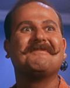

|
|
Harcourt Fenton "Harry" Mudd |
|
|||||
|  |
Trafficante interstellare coinvolto in moltissime attività illecite, tra cui
il trasporto di oggetti rubati, il contrabbando e l'acquisto di un'astronave con
denaro falso. Mudd è stato sottoposto a trattamento rieducativo pisichiatrico
con effetti dubbi. La sua licenza di navigazione è stata revocata in data stellare 1116.4;
in data stellare 1329.2 è imputato da Kirk di navigazione senza
licenza.